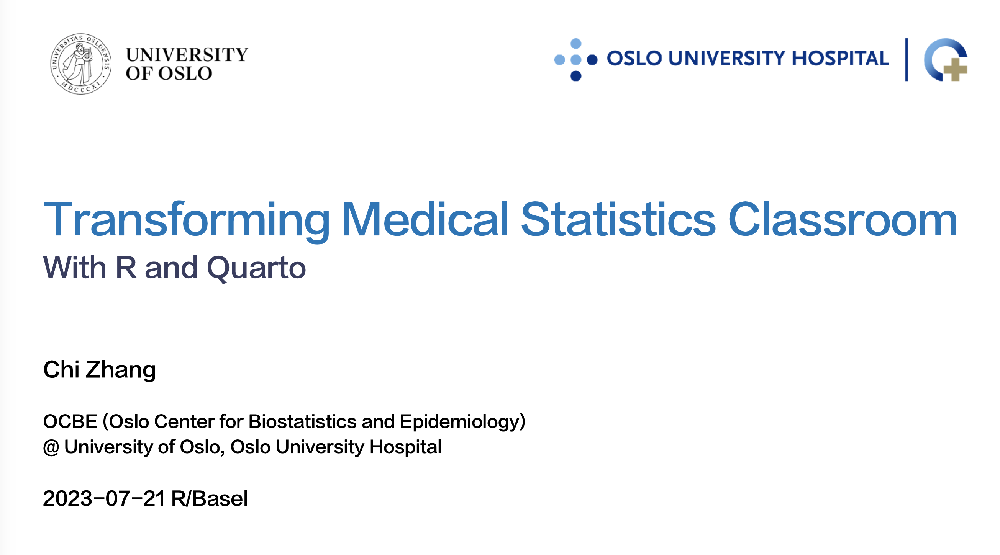

Something that Chi talks about

Join us to hear about how we ran a trial classroom (MF9130E) with R and Quarto at the Faculty of Medicine, University of Oslo
Talk at Oslo UseR meetup
Join us for a discussion on how open source tools can enable automated, reproducible and scalable public health reporting.
45 min talk and tutorial at Oslo UseR meetup
A 45 minutes trial lecture to fulfill the requirement of my PhD degree
The talk I gave at Big Insight Day 2021
A 15 minutes introduction to hospital EHR data